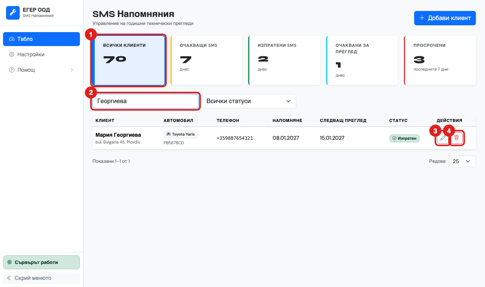
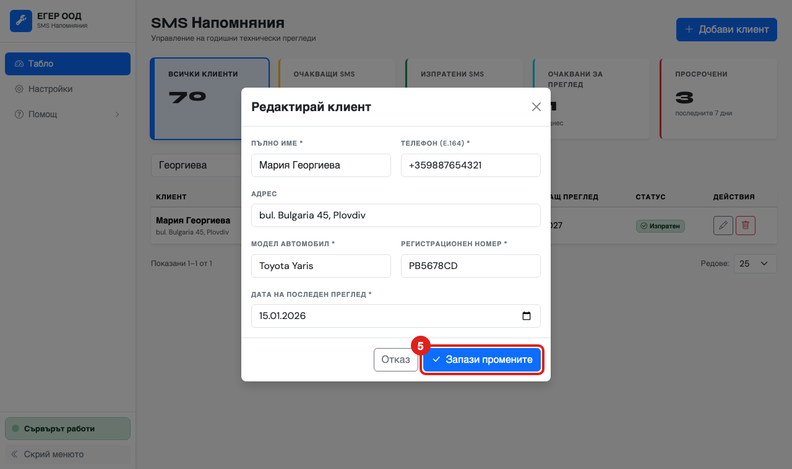
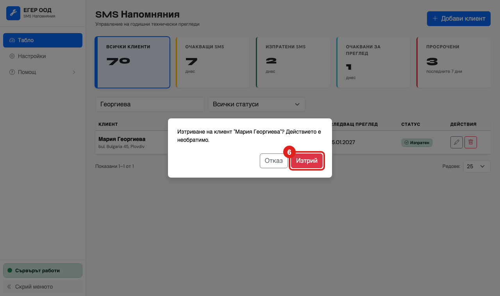

За печат или PDF: натиснете Ctrl + P
Как да променя или изтрия клиент
Бутоните за промяна и изтриване са в картата „Всички клиенти“.
Изтриването не може да се върне. Изтрийте само ред с грешка или клиент, който е два пъти в списъка.
Намерете клиента

- Щракнете картата Всички клиенти. 1
В другите карти няма бутони за промяна. В „Очакващи SMS“ има само „Изпрати“.
- Напишете името или номера на колата в полето Търси…. 2
Клиентът се показва в таблицата.
Променете данните

- На реда на клиента щракнете бутона с молив . 3
Номер 3 е на първата картинка.
- Отваря се прозорец „Редактирай клиент“. Поправете полето, което е грешно.
Клиентът мина прегледа? Сменете „Дата на последен преглед“. Вижте тема 4.
- Щракнете синия бутон Запази промените. 5
Написахте нов телефон с 0? Излиза въпрос за +359. Щракнете „Промени“ (тема 2).Размислихте? Щракнете Отказ. Нищо не се променя.
- Долу вдясно излиза зелено съобщение Клиентът е обновен.
Изтрийте клиента

- На реда на клиента щракнете червения бутон с кошче . 4
Номер 4 е на първата картинка.
- Излиза въпрос „Изтриване на клиент …? Действието е необратимо.“. Проверете името.
- Името е вярно? Щракнете червения бутон Изтрий. 6
Не сте сигурни? Щракнете Отказ. Нищо не се изтрива.
- Долу вдясно излиза сиво съобщение „Клиент … е изтрит“.
Готово. Какво стана?
- Промяната е записана във файла „клиенти.xlsx“ веднага.
- Сменихте телефона? Програмата забравя SMS-а до стария номер. Клиентът може да получи едно SMS на новия номер, ако прегледът още не е изтекъл.
- Изтрит клиент изчезва от таблицата и от файла. Той не получава повече SMS.
Ако нещо не стане
- Няма бутон с молив или с кошче.
- Щракнете първо картата „Всички клиенти“ (стъпка 1).
- Клиентът е „Просрочен“. Да го изтрия ли?
- Не. Просрочените клиенти остават в списъка (тема 6).
- Излиза червено съобщение „… е отворен в Excel“.
- Нищо не е променено. Затворете файла „клиенти.xlsx“ в Excel. Опитайте отново.
- Излиза червено съобщение „Клиентът не е намерен. Презаредете страницата.“
- Натиснете F5. Намерете клиента отново.
- Изтрихте грешен клиент.
- Добавете го отново (тема 2). Не помните данните? Обадете се за помощ: има копие на файла от всеки ден (тема 9).